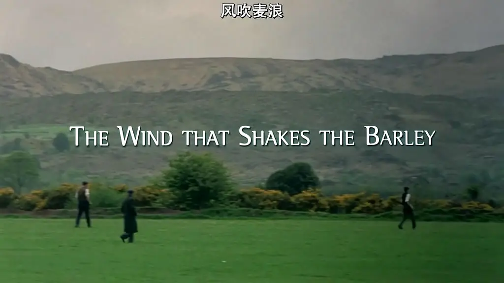
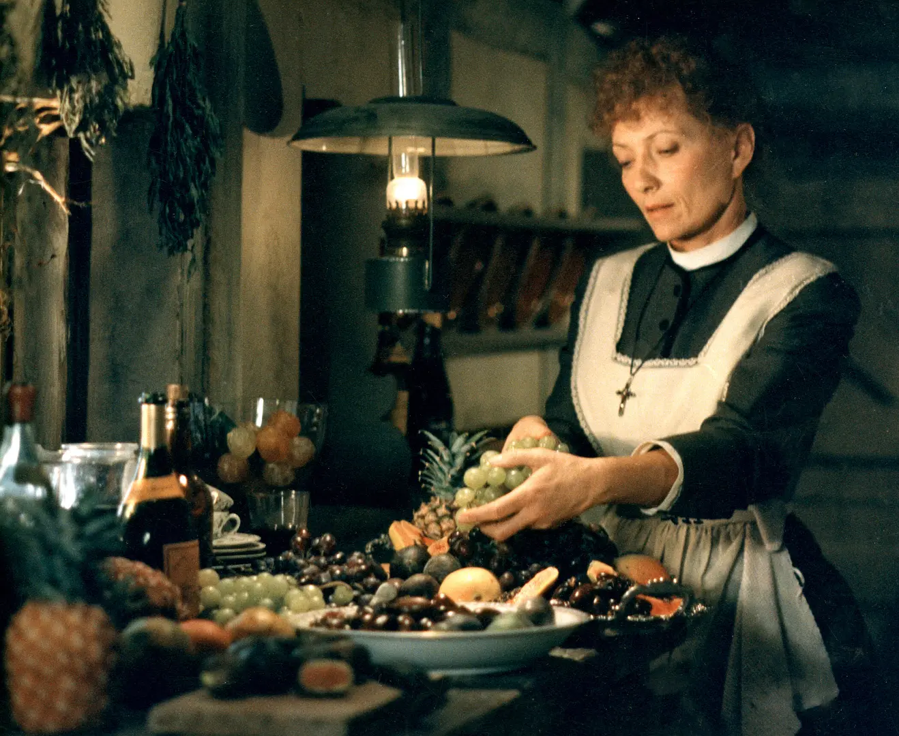
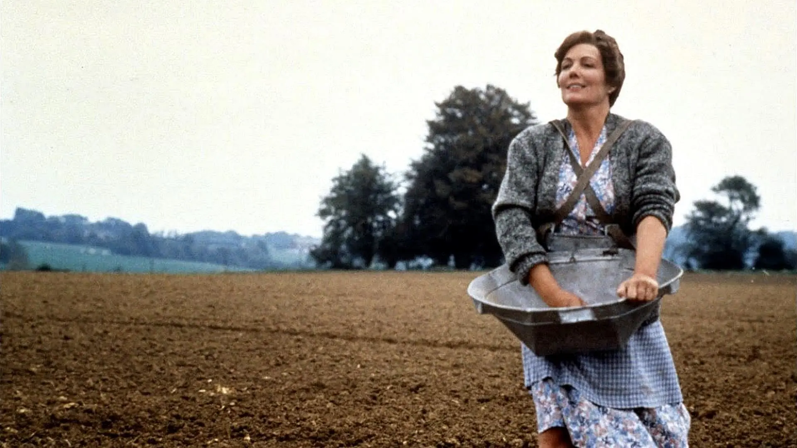

最近喜欢上了去电影资料馆看电影。
契机是上个礼拜，yg拿着三张电影资料馆的电影票问我要不要一起。yg是忠实的电影爱好者，据说他已经在小西天看过快一百次电影了。前几周的周末他在电影资料馆一天看了四部电影，这次秀秀不去，他只能临时找人。
我们从下午一点半开始，一直看到晚上十点，三部电影分别是《风吹麦浪》《巴贝特之宴》和《甜蜜的生活》。真的很好玩！头一次把一天的时间都泡在电影院里，但是完全不觉得辛苦，因为三部电影都各有各的精彩。

《风吹麦浪》是基里安·墨菲主演的，之前看过他的一个英剧《浴血黑帮》，所以一下就认出他了。这里跑题说一下那个英剧，不同于《教父》《美国往事》《赌城风云》中的意大利黑手党，也不同于《毒枭》系列中的哥伦比亚 墨西哥毒枭们，《浴血黑帮》中的剃刀党总给我一种小打小闹街头混混的感觉，甚至不如部分《古惑仔》系列。
可能是英剧犯罪片的本身的特点，也可能是我只看了第一季，它的题材因为时间太早比较受限。不过男主角基里安·墨菲的颜值和演技还是在线的，在电影中的表演也很好。电影是关于爱尔兰内战的，题材稍显老套，但还是很打动人。这个电影里还有《权力的游戏》里面的洋葱骑士。感觉英国的演员就那么几个hhh。

《巴贝特之宴》是这三部里面我最喜欢的一部，整个电影节奏比较慢，前半段差点让我睡着，但是随着剧情的展开，一切都从糊里糊涂慢慢变得清晰，最后欧亨利式的结尾既出人意料，又仿佛在情理之中。安利！
《甜蜜的生活》是著名导演费里尼的作品，时长将近三个小时，第一次看这种类型的电影，很多象征性的表达和内涵都没法完全领会到，中间一度昏昏欲睡，真是尴尬。不过片中马切洛的生活倒让我想起前不久一段酒精摄入过量的日子，决心以此为戒，以后不再喝多了。
可能是因为一天之内看了三部电影，这一天让我感觉格外漫长，也格外充实。好的电影能让心灵得到充分的休息。
礼拜五晚上我和yg又去资料馆，看了一部《安东尼娅家族》，这部电影同样特别好，我在豆瓣上给它打了5星。
片中的安东尼娅时时让我想起我的奶奶，同样是一位坚强的女性，在父亲和他的兄弟们还小的时候，几乎是一个人撑起了整个家。电影结束时，观众们都静静地坐在座位上，迟迟不愿离开。
这篇随笔的题目是电影中的一句旁白，我觉得说得很好，索性拿来当做题目了。如果要选出今年看过的最棒的一部电影，一定是这一部了。
